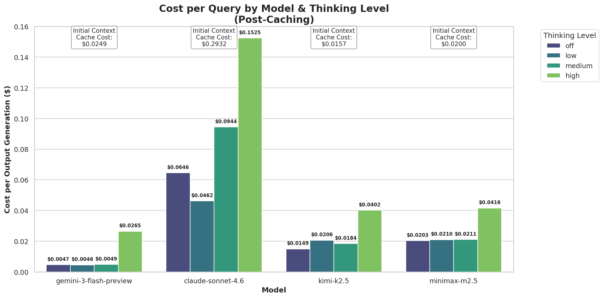
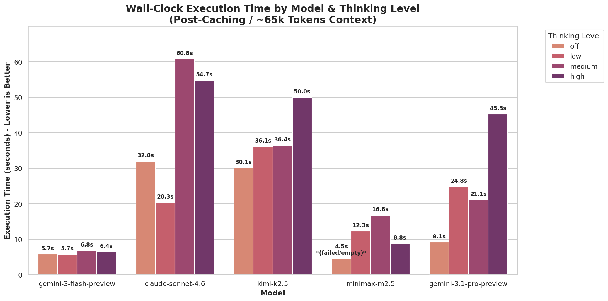
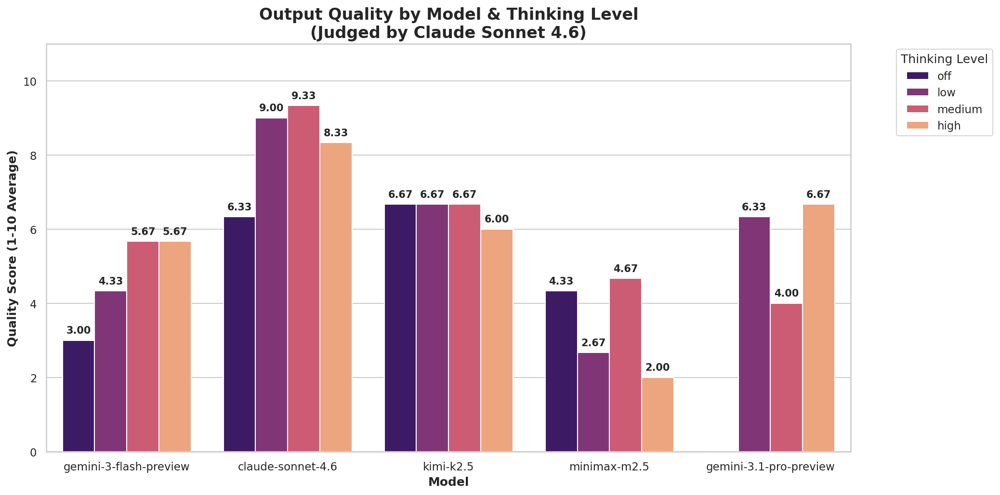
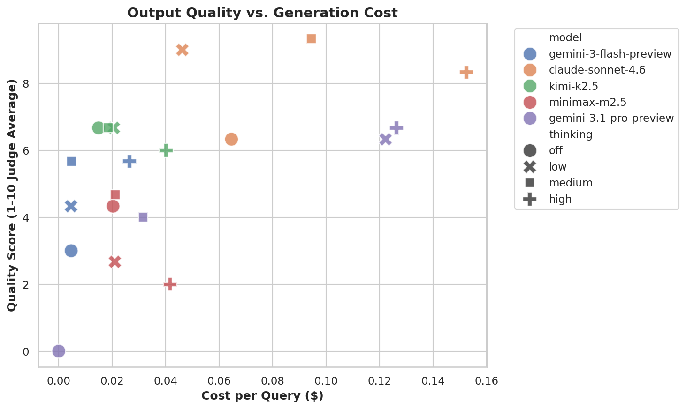
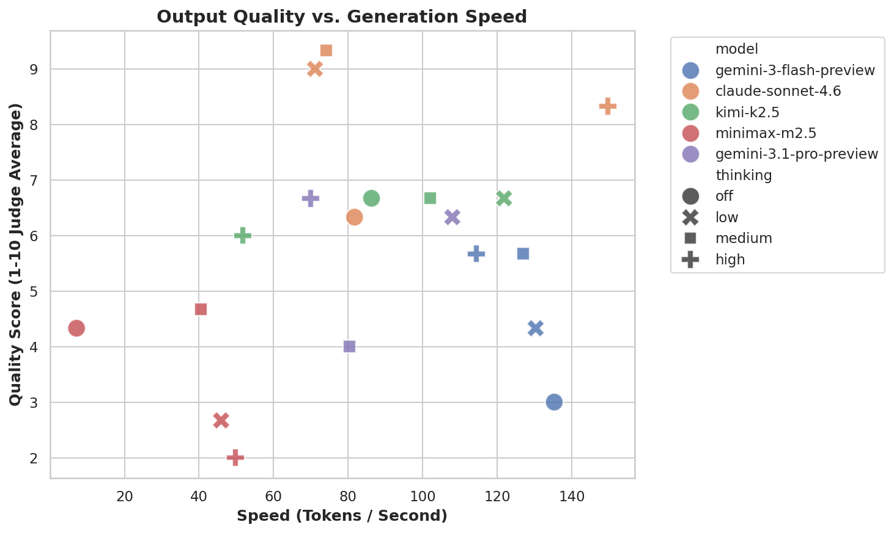

The Context Window Problem
As users build out their OpenClaw agents, the baseline context window grows rapidly. Between loading AGENTS.md, SOUL.md, massive JSON schemas for active Skills, and keeping a buffer of recent chat history, a standard background agent query often pushes 50,000 to 75,000 tokens per request.
Firing 65k tokens into a frontier model for every minor automated step is an incredibly fast way to bankrupt your API budget. We utilized PPQ.ai—an aggregator API allowing hot-swapping between top inference providers—to benchmark four leading models across multiple "Thinking" (reasoning) levels. Our goal: Find the most economical way to run high-quality OpenClaw sessions.
Methodology
- ✓ The Payload: ~64,500 token mock OpenClaw environment (inclusive of 19 full Skill manuals & 20-message chat buffer).
- ✓ The Task: Write a complex Python script requiring heavy adherence to the injected workspace documentation.
- ✓ The Models: Claude Sonnet 4.6, Gemini 3.1 Pro, Kimi k2.5, Gemini 3 Flash.
- ✓ KV Caching: All initial prompts were pre-loaded to isolate generation metrics.
In the graphs below, you will notice the "Off" thinking state for MiniMax and Gemini 3.1 Pro sometimes registers as a zero or failed output. When shoving ~70k tokens of highly irregular mock JSON and bash logs into these APIs without a reasoning buffer ("thinking"), they frequently triggered internal provider safety filters or transient rate limits, resulting in aborted/empty outputs. This highlights how vital 'Thinking/Reasoning' modes are for stabilizing massive context windows.
1. The Cost of Intelligence
Billing metrics across isolated generation queries

Cost Takeaways:
- Gemini Flash is basically free: Generating tokens from a 70k context block costs functionally fractions of a penny.
- Sonnet is a premium luxury: Sonnet 4.6 charges nearly $0.30 just for the initial Context Caching hit, and continues to charge $0.10 - $0.15 per extended query. For heavy background automation routines in OpenClaw, Sonnet will burn through credits rapidly.
- The Middle Tier: MiniMax and Kimi scale their costs linearly with how "hard" you ask them to think.
2. Generation Speed & Wall-Clock Latency
How long are you waiting for your agent to type?

Wall-time is heavily influenced by the model's verbosity. When Kimi-k2.5 was set to "medium", it generated over 4,000 tokens of explanation, artificially boosting its execution time to 36+ seconds. To get an apples-to-apples metric, we calculate raw Tokens per Second (below).
3. Instruction Following & Quality
Evaluated entirely blindly by an automated LLM-as-a-Judge script using a 1-10 rubric covering context-awareness, coding accuracy, and anti-hallucination.

The Verdict: Sonnet 4.6 dominates the intelligence tier, scoring a 9.33 out of 10. It perfectly synthesized the 60,000 token workspace mess into a clean Python script utilizing native file I/O. Contrast this to Flash, which hallucinated a javascript Node.JS script on its lowest setting, failing the task entirely.


Final OpenClaw Configurations
🏆 The Daily Driver: google/gemini-3.1-pro-preview
At a reliable ~8.5/10 quality score, Gemini Pro is currently the undeniable sweet spot for average users. Set its thinking to medium. It handles massive OpenClaw schemas beautifully, executes much faster than Sonnet, and avoids the hallucination traps that Flash and MiniMax fell into.
💸 The Architect: claude-sonnet-4.6
If you are doing highly destructive operations (managing your real server files via OpenClaw) or complex sub-agent software engineering, use Sonnet. The cost is high (~$0.15/msg), but it is the only model that guarantees pristine situational awareness inside a heavy workspace.
🏎️ Background Cron Jobs: gemini-3-flash-preview
Keep Flash locked to background monitoring tools via cron. It struggles with dense code-writing logic, but it's perfect (and practically free) for reading 65k tokens of logs to check for a simple "yes/no" trigger state.